<!-- TODO add slide numbers & maybe slide name --> ### Batch Effects are Causal Effects  Joshua T. Vogelstein --- name:talk ### Outline - [Motivation](#defn) - [Quantifying Batch Effects](#statistics) - [Real Data](#results) - [Discussion](#disc) --- name:defn ### Outline - Motivation - [Quantifying Batch Effects](#statistics) - [Real Data](#results) - [Discussion](#disc) --- ### Modern neuroimaging data is expansive - Neuroimaging data is big and costly - Expansive mega-studies (study comprised of studies) collected around the world - unprecedented sample diversity (demographically) and sizes (more data) - generalizability -- --- ### Sources of variability are not well understood - Batch Effect: the impact of the data collection procedure (measurement device, measurement protocol, season, etc.) on the data collected - Demographic Effects: impact on the data of scientifically "interesting" characteristics of the object under study - Site Effect = Demographic Effects + Batch effects --- ### Batch effects are confounded with demographic effects - difficult to parse site effects into the components due to batch - We want to <span style="color:red">mitigate batch effects</span> while .ye[preserving demographic effects] - Approaches which properly isolate the batch effect while deconfounding the demographic effect are limited --- ### How do we address batch effects? - Skip to correction (e.g., SVA, ComBat, etc.)? - Focus on estimation? Proposal: leverage techniques from .ye[causal inference] to yield strategies which are both theoretically and empirically sensible for batch effect analyses --- name:statistics ### Outline - [Motivation](#defn) - Quantifying Batch Effects - [Real Data](#results) - [Discussion](#disc) --- ### General Notation | Symbol | Interpretation | | --- | --- | | $Y$ | random variable | | $y$ | realization of random variable $Y$ | | $f(y)$ | density/mass of $Y$ evaluated at $y$ | | $f(y\|x)$ | conditional density/mass of $Y$ at $y$, conditional on $X = x$ | --- ### Specific Notation | Symbol | Interpretation | | --- | --- | | $Y$ | outcome measurement (observed) | | $T$ | exposure (batch) | | $X$ | covariates (known) | | $Z$ | covariates (unknown) | - $f(y | t, x, z)$: the true outcome model, for any covariates $(x,z)$ -- - we .ye[cannot] estimate this without assumptions, due to unknown covariates $Z$ --- ### Causal Batch Effect - $f_{x,z}(y|t)$: the true outcome, averaged over observed .ye[and] unobserved covariates $$\forall t \in [K]: \;\;\;\; f_{x,z}(y|t) = \int f(y|t,x,z) f(x,z) \;d(x,z)$$ - Causal Effects are .ye[functions] of the set $\\{f_{x,z}(y|t)\\}_t$ - Causal Batch Effect: $$f\_{x,z}(y|t) \neq f\_{x,z}(y|t')$$ --- #### Causality is "easier" if we know everything .ye[impactful] 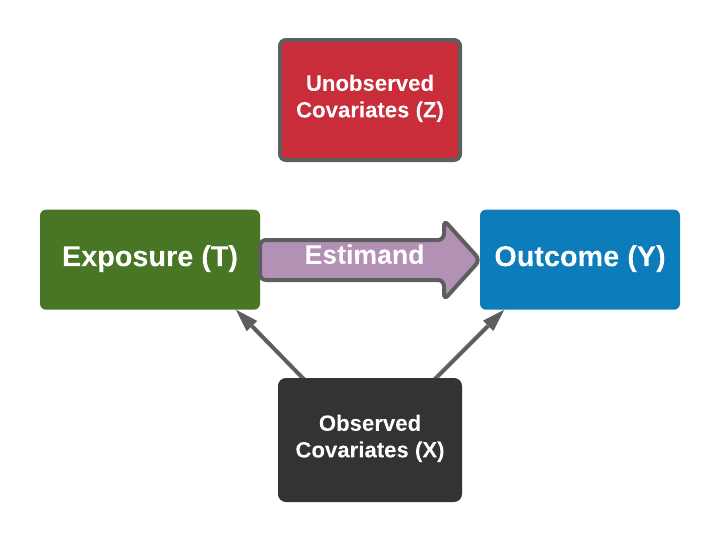 - conditioning on observed covariates sufficient to establish causality --- ### Causality and fear of the unknown(s) 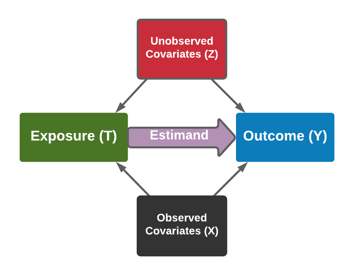 - assumptions (potentially .ye[completely unreasonable]) needed to proceed --- ### Typical neuroimaging covariates are much more complicated 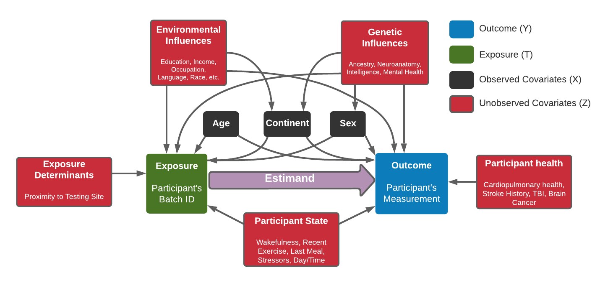 --- ### Confounding is the enemy 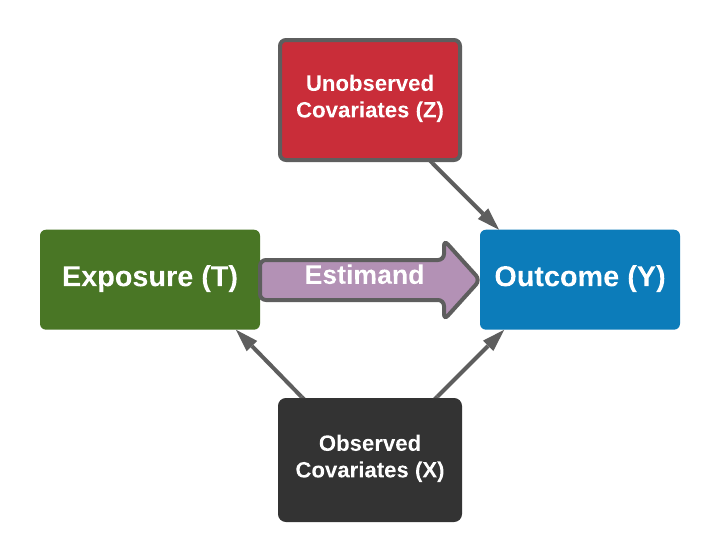 - If we can address the confounding, we can obtain unbiased causal estimates --- ### Associational Effect - Observe $\left(y_i, t\right)$ for all $i \in [n]$ $$f(y|t) \neq f(y|t')$$ - $f(y|t)$: density of outcome, conditional on batch -- - Causal if observed and unobserved covariates ($X$ and $Z$) are non-confounding - If batches differ on demographics, not causal --- ### Conditional Effect - Observe $\left(y, t, x_i\right)$ for all $i \in [n]$ $$f(y|t,x) \neq f(y|t',x)$$ - $f(y|t,x)$: density of outcome, conditional on batch and covariates -- - Causal if .ye[strong ignorability] holds 1. Exposure $T$ independent of the outcome $Y$, conditional on covariates $X$ and $Z$ 2. Covariate distributions overlap (propensity overlap) --- ### Adjusted Effect - Observe $\left(y_i, t, x_i\right)$ for all $i \in [n]$ - Adjust samples such that the propensities are equal, yielding adjusted conditional distributions $\tilde f(y|t,x)$ and $\tilde f(y|t',x)$ - Solves the issue of covariate overlap from the conditional effect $$\tilde f(y|t,x) \neq \tilde f(y|t',x)$$ -- - Still requires exposure $T$ independent of the outcome $Y$, conditional on covariates $X$ and $Z$ --- ### Causal Crossover Effect - Observe $\left(y_i^{(t)}, t, x_i^{(t)}\right)$ for all $t \in [K], i \in [n]$ $$f\left(y^{(t)}\big|t,x^{(t)}\right) \neq f\left(y^{(t)}\big|t',x^{(t')}\right)$$ - $f\left(y^{(t)}\big|t,x^{(t)}\right)$: density of outcome at exposure $t$, conditional on exposure $t$ and covariates at $t$ -- - Traits are constant to individuals, and therefore perfectly balanced across both groups -- - States may be different, as they may be functions of location and time - Causal if no unobserved confounding states --- ### Crossover design removes .ye[most] confounding 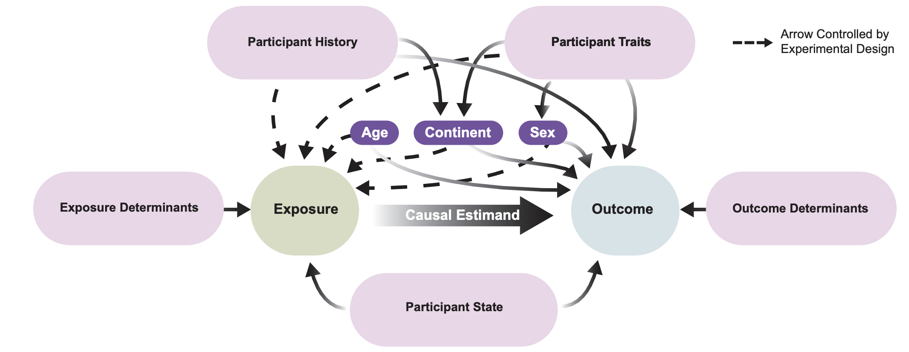 --- ### Limitations of Existing Approaches for Site Effect Removal - existing techniques ignore the .ye[strong ignorability criterion] 1. Exposure $T$ independent of the outcome $Y$, conditional on covariates $X$ and $Z$ 2. Covariate distributions overlap (propensity overlap) - ComBat, Conditional ComBat, Z-Scoring, etc. may remove demographic signal --- ### Causal ComBat Given $K$ datasets: -- 1. Identify smallest dataset, $k'$, as the exposure -- 2. Match individuals from unexposed datasets $k\neq k'$ to the exposure individuals -- 3. Discard individuals from exposed dataset who do not have matches across all unexposed datasets -- 4. Discard individuals from unexposed datasets who are not matched to retained exposed individuals -- 5. Perform Conditional ComBat on retained exposed and unexposed individuals -- - Causal if exposure $T$ independent of the outcome $Y$, conditional on covariates $X$ and $Z$ --- name:results ### Outline - [Motivation](#defn) - [Quantifying Batch Effects](#statistics) - Real Data - [Discussion](#disc) --- ### CoRR mega-study 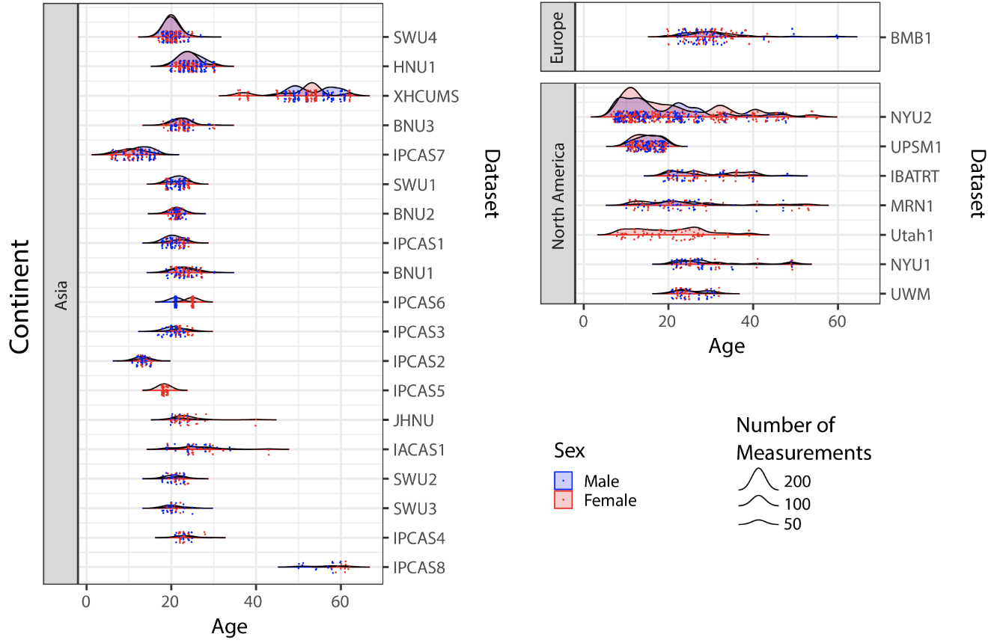 --- ### Connectomes from CoRR mega-study 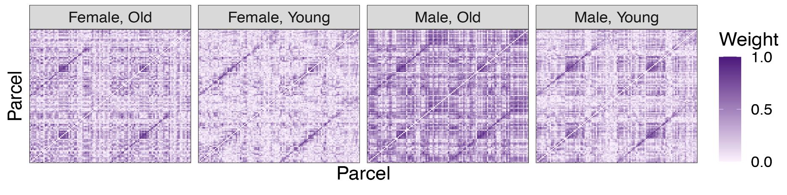 - disparity across young/old, male/female - homotopic effect --- ### Associational and conditional effects always exist 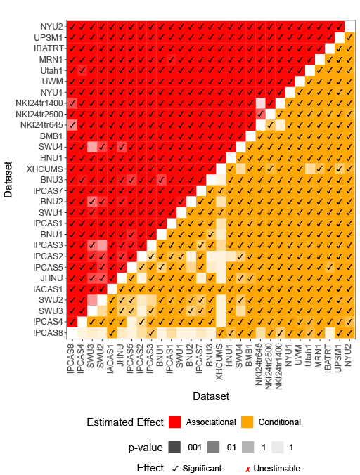 --- ### Causal effects only sometimes estimable 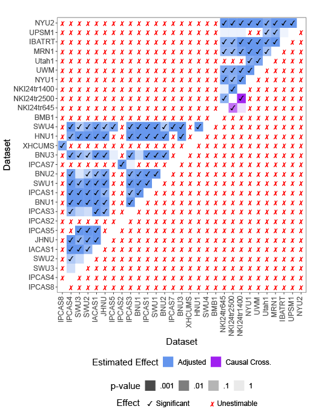 --- ### Site correction removes site variability 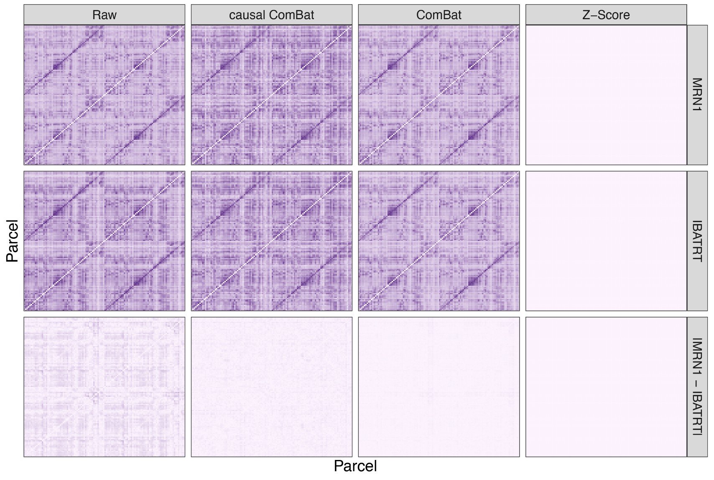 --- ### ComBat removes biological heterogeneity 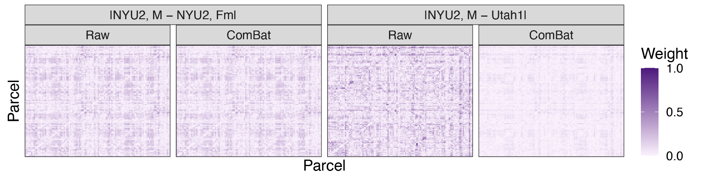 --- ### Causal ComBat leaves some batch variability 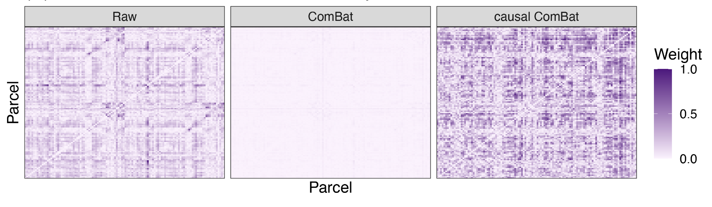 --- ### Control numerical experiments - examine whether known desirable effects present .ye[before] site correction are present after site correction - If not, we have .ye[reduced] signal in the data --- ### Site correction preserves within-batch biological heterogeneity 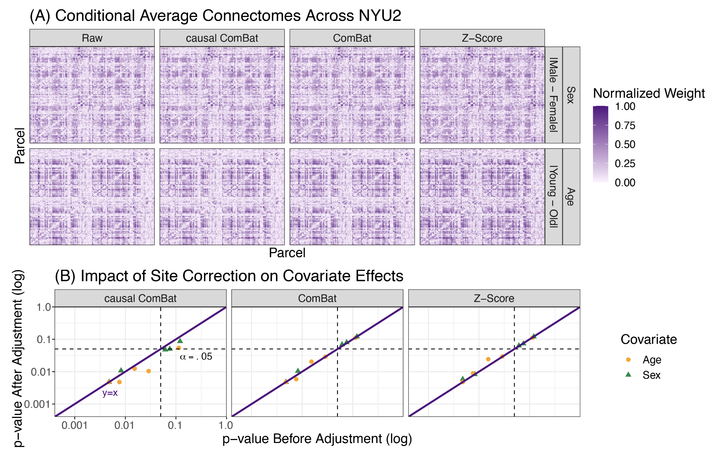 --- ### Z-scoring removes topological features of connectomes 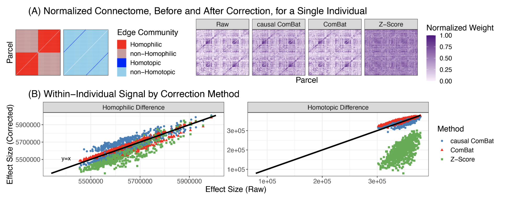 --- name:disc ### Outline - [Motivation](#defn) - [Quantifying Batch Effects](#statistics) - [Real Data](#results) - Discussion --- ### Contributions 1. Define batch effects as a problem in causal inference -- 2. Illustrate existing analyses of batch effects in neuroimaging amount to associational or conditional effects, and inadequately account for confounding -- 3. Show how batch effects can be estimated and tested on multivariate, non-euclidean batches using kernel methods -- 4. Provide an approach for batch effect correction that pays attention to confounding biases in the data -- 5. Highlight useful properties of the measurements that may (or may not) be preserved by different batch effect correction approaches --- ### Acknowledgements <div class="small-container"> <img src="faces/jovo.png"/> <div class="centered">Josh Vogelstein</div> </div> <div class="small-container"> <img src="faces/bcaffo.jpg"/> <div class="centered">Brian Caffo</div> </div> <div class="small-container"> <img src="faces/powell.jpg"/> <div class="centered">Mike Powell</div> </div> <div class="small-container"> <img src="faces/blank.png"/> <div class="centered">Anton Alyakin</div> </div> <div class="small-container"> <div class="centered">Michael Milham</div> </div> <img src="images/funding/nsf_fpo.png" STYLE="HEIGHT:95px;"/> <img src="images/funding/nih_fpo.png" STYLE="HEIGHT:95px;"/> <img src="images/funding/darpa_fpo.png" STYLE=" HEIGHT:95px;"/> <img src="images/funding/iarpa_fpo.jpg" STYLE="HEIGHT:95px;"/> <img src="images/funding/KAVLI.jpg" STYLE="HEIGHT:95px;"/> <img src="images/funding/schmidt.jpg" STYLE="HEIGHT:95px;"/> - [Code](github.com/neurodata/batch_effects)